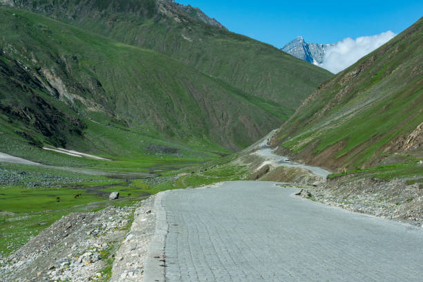
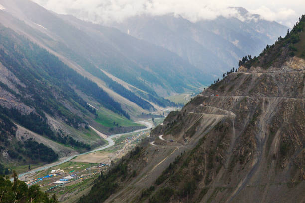

How to Reach Sonmarg?
How to reach Sonmarg by Air
The nearest International Airport is Srinagar International Airport, roughly 80 Kms from Sonmarg.
This airport is well connected to the other important cities like Jammu, New Delhi, Mumbai, Leh, Amritsar and Bangalore.
Nearest Airport : Srinagar Airport, Srinagar
How to reach Sonmarg by Rail
The nearest railway station to Sonmarg is Srinagar railway station and is well connected through various trains.
Trains connect Sonmarg to the cities like Delhi, Mumbai, and Chennai.
How to reach Sonmarg by Road
Sonamarg is 80 Kms from Srinagar, 120 Kms from Gulmarg, 144 Kms from Achabal, 150 Kms from Kokernag, 174 Kms from Pahalgam and is very well connected through Jammu and Kashmir State Road Transport Corporation.
PLACES TO VISIT IN SONMARG
1. Gangabal Lake
A cascading river at the foothills of Mount Harmukh, Sonmarg sightseeing is so not complete without including a visit to the mesmerizing Gangabal Lake. Drawing its resources from the natural springs and glaciers, Gangabal Lake is one of the best places to visit in Sonmarg in June for those who’re looking forward to enjoy the best of trekking in the heart of Kashmir.
Location: Kashmir Valley, Ganderbal, Sonmarg, Jammu and Kashmir
2. Baltal Valley
Serving as a perfect base for the travelers to embark on the famous Amarnath Yatra, Baltal Valley is one of the best places of interest in Sonmarg.
Set along the banks of River Sindhi, it offers breathtaking views of the snowbound mountains at a distance of just 15 kilometers from the town of Sonmarg.
Location: Near Zoji La Pass, Sonmarg, 191203, Jammu and Kashmir
3. Thajiwas Glacier
Opening up umpteen number of opportunities for hiking, trekking, and camping, Thajiwas Glacier is one of the best Sonmarg attractions that one must not miss during their trip to Kashmir.
Home to a stunning glacier, the refreshing meadows, and numerous waterfalls, Thajiwas Glacier is every bit of stunner and a true Kashmiri delight to experience.
Location: Forest Block, Sonmarg, Jammu and Kashmir 191203
4. Zoji-La Pass


Located high on the Indian National Highway 1D, Zoji La is one of the highly perched, and dangerous yet thrilling mountain passes in Kashmir. It not only connects Srinagar to Leh but it is one of those thrilling tourist places in Sonmarg that takes you a step closer to the Himalayas.
Location: 1 Indian National Highway, Srinagar District, Sonamarg 191203, Jammu and Kashmir
5. Satsar Lake
Located in the Ganderbal district of Kashmir and at an enthralling elevation of 3,610 meters, Satsar Lake is one of the best places to visit in Sonmarg. Literally translating into seven lakes, this beautiful conflux houses seven clustered alpine lakes that are interconnected to each other in a cascading formation.
Location: Ganderbal, Jammu and Kashmir


.jpg)